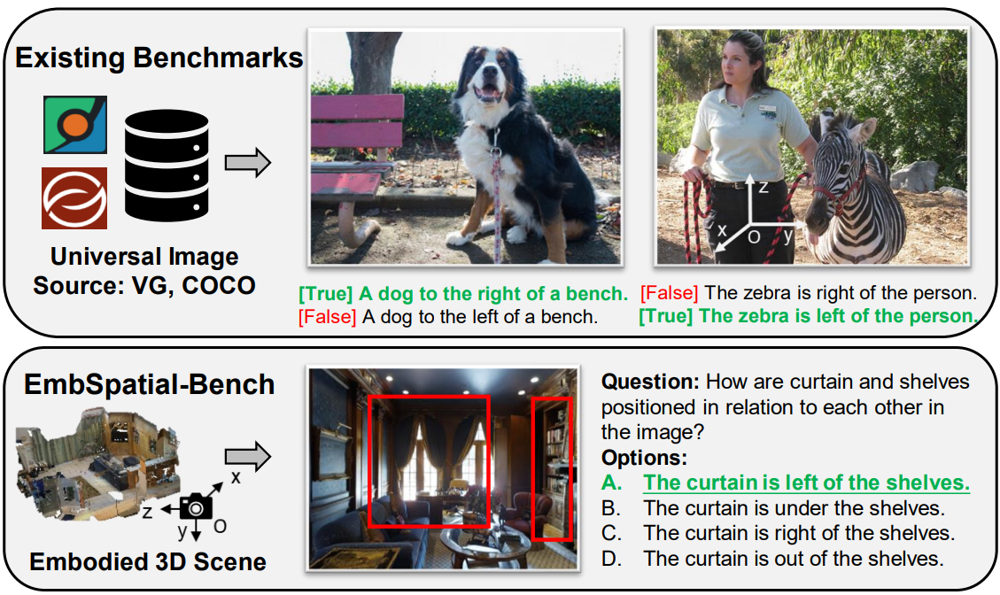
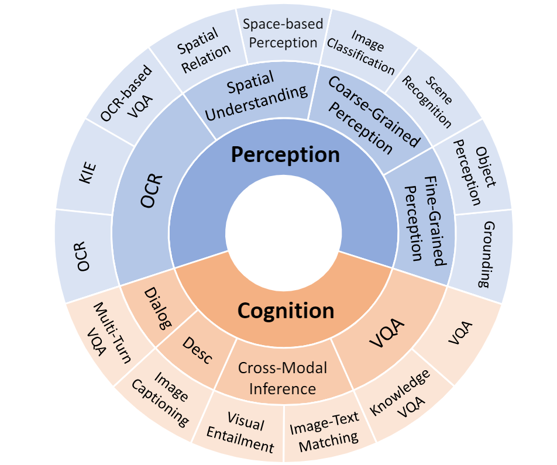
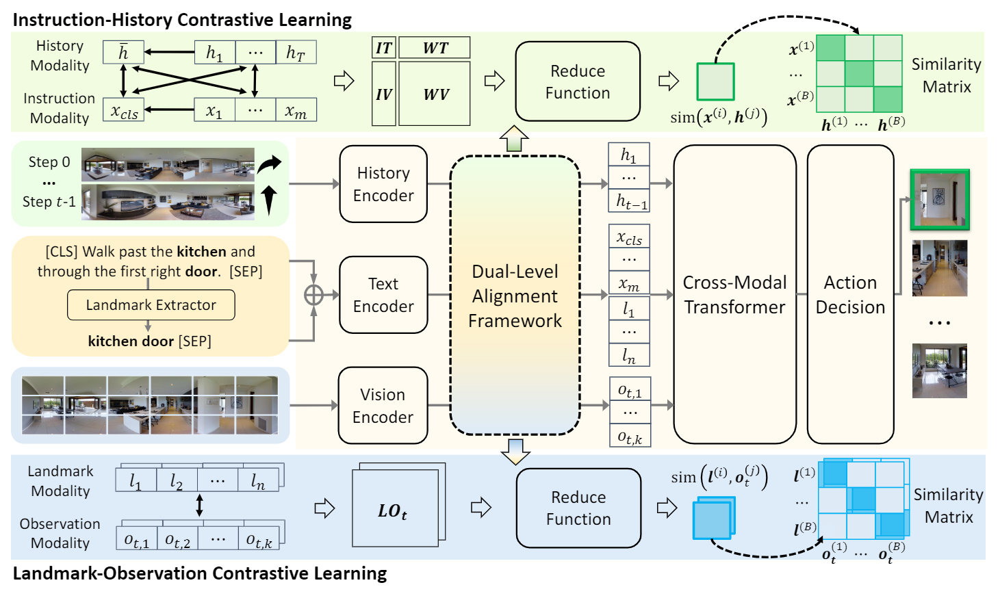

Research interests: Social Network Analysis, Embodied Vision-Language Mengfei Du is a MPhil student from DISC Lab at School of Data Science, Fudan University, advised by Prof. Zhongyu Wei. Previously, he obtained B.S. from the School of Data Science, Fudan University, advised by Prof. Yang Chen. |
* corresponding author; † equal contribution.
|
 |
|
|
 |
|
|
 |
|
IEEE International Conference on Multimedia and Expo (ICME)
ACM International Conference on Multimedia (ACM MM)
Second Prize of Fudan University Postgraduate Scholarship, 2023
Excellent Graduate Award of Fudan University, 2022
Second Prize of Fudan University Graduates Scholarship, 2022
Wangdao Scholar, 2022
First Prize of Undergraduate Excellent Student Scholarship, 2021
Third Prize of Undergraduate Excellent Student Scholarship, 2020
Second Prize of Undergraduate Excellent Student Scholarship, 2019
FUDAN DATA130008, Autumn 2023, Introduction to Artificial Intelligence.